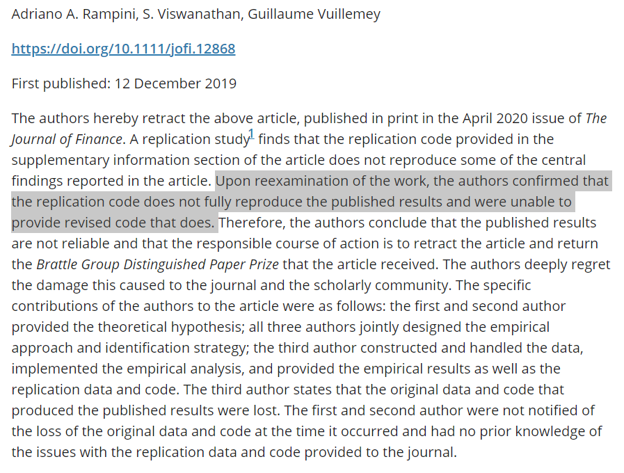

Ethics & Open Data (ANPCONT)

My opinions are my own, not those of the Institution I work for.
Open Science & Open Data
” Open science encompasses unhindered access to scientific articles, access to data from public research, and collaborative research enabled by ICT tools and incentives.
Broadening access to scientific publications and data is at the heart of open science, so that research outputs are in the hands of as many as possible, and potential benefits are spread as widely as possible” (OCDE).
. . .
Open data is the idea of sharing the data used in research.
Open code is the idea of sharing the codes used in research.
What is NOT a problem anymore
- Technology to publish data and codes
. . .
They are mostly free.
What is NOT a problem anymore
- Your files CAN be cited
. . .
Very easy to create PlumX metrics for your files.
What is NOT a problem anymore
- General Awareness and Incentives Source.
What is NOT a problem anymore
- General Awareness and Incentives Source.
What is NOT a problem anymore
- General Awareness and Incentives Source.

What is NOT a problem anymore
- General Awareness and Incentives Source.

What is NOT a problem anymore
- General Awareness and Incentives Source.

What ARE the problems (in my opinion)
- Scholars’ lack of organization Source
What ARE the problems (in my opinion)
- Scholars’ lack of organization
- Never change the original excel (you will never remember the changes you have made). Instead, make data changes inside your code (i.e., Stata do file).
- Start using some solution for version control. For example, Github (It is free!!).
. . .
What ARE the problems (in my opinion)
- General lack of ability to review data (not so much to review codes)
How to detect if the data has been manipulated or fabricated?
- It is a similar challenge to detecting Fake News.
- But if there are tools to detect plagiarism, why wouldn’t exist tools to detect data fraud in the future?
. . .
Who is in charge to detect data fraud? The journal? The reviewers?
- How to train reviewers to detect it?
What ARE the problems (in my opinion)
Before you have the idea to fabricate data, beware that… Source
What ARE the problems (in my opinion)
- There are still concerns that data providers will backslash the data-sharing movement.
- This issue seems quiet for now…
- Unidentified data is not a reality in Accounting & Finance.
- If you do not use secondary data, you can share without concerns.
What ARE the problems (in my opinion)
- Journals are still learning how to create internal protocols to share data.
“Code” is just a couple of files. You should share it.
- But sharing code only goes so far. Experienced researchers can evaluate the quality of your code and use it as a subjective proxy for the quality of your work.
- If you write good codes, you should share them. If you write bad codes, start writing good ones (simple, clear, etc.)
- Obviously, the journal needs to be able to publish your code.